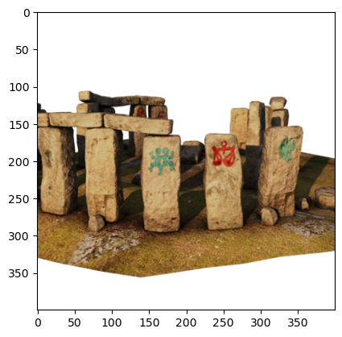
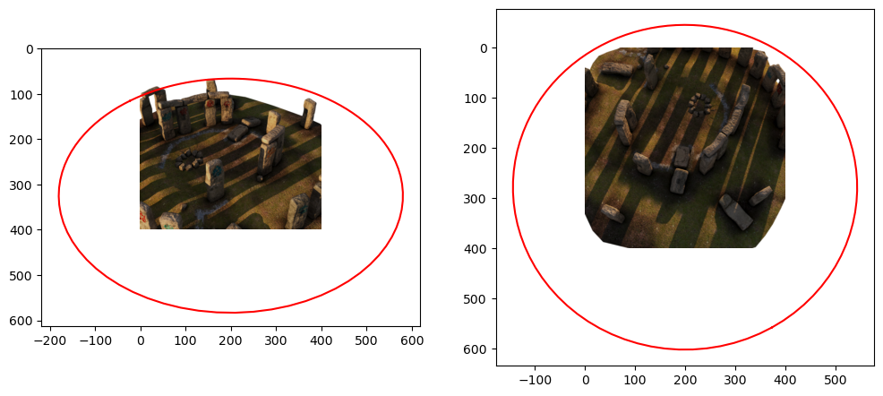

image = read_training_image(60, downsampling_factor=2)
plt.imshow(image);
We use a dataset from the Stanford NeRF Navigation project. It consists of 500 images, split into 200 images for training, and then validation and tests sets of 150 images each.
The code below reads an image into memory:
read_stonehenge_image (path:str, downsampling_factor:int=1)
*Read image from the Stonehenge dataset, and return as a PIL image.
Returns: PIL.Image: Image object representing the image at the specified index.*
read_training_image (index:int, downsampling_factor:int=1)
Read image from the stonehenge dataset, and return as a PIL image.
A NeRF is trained with a set of rays. For a given image, every pixel in the image corresponds to a ray, and the origin of the ray is exactly the optical center of the camera. To calculate the direction of the ray need two pieces of information for ech image:
For the Stonehenge dataset, all this hard work has been done for us, and/or the images have been simulated with exactly known camera parameters, both intrinsic and extrinsic. The dataset creators provide undistorted images accompanied by a \(3 \times 4\) camera matrix \(M\).
The Stonehenge dataset came with its camera matrices: they were all written in a json file, which we can parse into a python dictionary:
load_json (path)
*Load and parse a JSON file from a relative path.
Returns: dict: Parsed JSON data as a Python dictionary.*
The camera matrix associated with the image below can then be extracted by converting to numpy:
extract_camera_matrix (camera_data, index:int, image_size:tuple)
Read the 3x4 camera matrix associated with a training image.
extract_extrinsics (camera_data:dict, index:int)
Extract the extrinsic matrix from the given camera_data.
calculate_intrinsics (image_size:tuple, camera_angle_x:float)
Calculate the intrinsic matrix given the image size and camera angle.
We can use a camera matrix to project arbitrary points into the scene. We will use this to project a circle to ascertain the dimensions in which the Stonehenge scene fits.
# Make a function to load the camera matrix and project a circle into the image:
def project_circle(camera_data, index, image_size, circle):
"""Project the circle into the image."""
M = extract_camera_matrix(camera_data, index, image_size)
homogeneous = M @ circle
return homogeneous[:2] / homogeneous[-1]# Show two images side by side and plot the circles on the image:
fig, (ax1, ax2) = plt.subplots(1, 2, figsize=(12, 6))
i1, i2 = 70, 140
ax1.imshow(read_training_image(i1, downsampling_factor=2))
ax1.plot(*project_circle(data, i1, (400, 400), circle), color="red")
ax2.imshow(read_training_image(i2, downsampling_factor=2))
ax2.plot(*project_circle(data, i2, (400, 400), circle), color="red");
Recall that a 3D point \(P\) can be projected into an image via
\[ \tilde{p} = K R^T (P - t) \]
where \(\tilde{p}\) are homogeneous 2D image coordinates. We can re-write this as
\[ \tilde{p} = M\tilde{P} \]
where \(\tilde{P} = \begin{bmatrix}P \\1 \end{bmatrix}\) and the camera matrix \(M\) is given by
\[ M = [A|a] = [K R^T | - K R^T t] \]
That means that if we are given the camera matrix \(M\) we can always recover the ray origins as \[ t = -A^{-1} a \]
and a random 3D point \(P\) on the ray corresponding to \(\tilde{p}\) as
\[ P = A^{-1}(\tilde{p} - a) \]
since \(\tilde{p} = AP + a\).
We can then calculate the ray origin and ray direction for any pixel:
A, a = M[:, :3], M[:, 3]
t = -np.linalg.inv(A) @ a
p_ = np.array([3.5, 2.5, 1]) # middle of a 7x5 image (width x height) in homogeneous coordinates.
P = np.linalg.inv(A) @ (p_ - a)
D = P / np.linalg.norm(P)
test_close(t, np.array([0.54, -1.85, 1.60]), eps=0.1)
test_close(D, np.array([0.14, -0.82, 0.55]), eps=0.1)calculate_rays (M:numpy.ndarray, image_size:tuple)
Calculate a batch of rays associated with every pixel in a given image. When given size (W, H), returns two tensors of shape (H, W, 3) and (H, W, 3).
Let’s try this for a simple 7x5 image (where 7 is width and 5 is height), and check that the batch dimensions are as we expect (width, height, 3), and that for the center pixel they agree with our manual calculation:
Check that we get the same direction in top-left corner for different resolutions:
size = 400, 400
M = extract_camera_matrix(data, 10, size)
_, D400 = calculate_rays(M, size)
print(D400[0,0,:])
size = 800, 800
M = extract_camera_matrix(data, 10, size)
_, D800 = calculate_rays(M, size)
print(D800[0,0,:])
test_close(D400[0,0,:], D800[0,0,:], eps=1e-3)
size = 200, 200
M = extract_camera_matrix(data, 10, size)
_, D200 = calculate_rays(M, size)
print(D200[0,0,:])
test_close(D400[0,0,:], D200[0,0,:], eps=1e-3)[-0.57143088 0.80036988 -0.18131408]
[-0.57134447 0.80046027 -0.18118731]
[-0.57160367 0.800189 -0.18156763]Below we cycle through 20 of the 200 training images, showing 64 rows for each.
fig = go.Figure()
for i in range(0, 199, 10):
M = extract_camera_matrix(data, i, (image.size))
origins, directions = calculate_rays(M, (image.size))
T = origins[::100,::100,:].reshape(-1, 3)
D = directions[::100,::100,:].reshape(-1, 3)
# Adding line segments for each ray
for start, end in zip(T, T + D):
fig.add_trace(go.Scatter3d(x=[start[0], end[0]],
y=[start[1], end[1]],
z=[start[2], end[2]],
mode='lines',
line=dict(color='red')))
fig.update_layout(showlegend=False)
fig.show()Unable to display output for mime type(s): application/vnd.plotly.v1+jsonAnd here we show samples for one ray from each of those 20 cameras, with the rendering volume shown as well:
t_values = np.linspace(data["Near"], data["Far"], 64)
def sample_along_ray(origins, directions):
return origins[..., None, :] + t_values[:, None] * directions[..., None, :]
fig = go.Figure()
W, H = image.size
for i in range(0, 199):
M = extract_camera_matrix(data, i, image.size)
origins, directions = calculate_rays(M, image.size)
i = np.random.randint(0, W)
j = np.random.randint(0, H)
T = origins[i, j, :]
D = directions[i, j, :]
samples = sample_along_ray(T, D)
# Adding line segments for each ray
fig.add_trace(
go.Scatter3d(
x=samples[:, 0],
y=samples[:, 1],
z=samples[:, 2],
mode="lines",
line=dict(color="red"),
)
)
fig.add_trace(
go.Scatter3d(
x=[T[0].item()],
y=[T[1].item()],
z=[T[2].item()],
mode="markers",
marker=dict(color="red", size=2),
)
)
# add a cuboid from -1 to 1 in x and y, and 0 to 0.5 in z:
fig.add_trace(
go.Mesh3d(
x=[-1, 1, 1, -1, -1, 1, 1, -1],
y=[-1, -1, 1, 1, -1, -1, 1, 1],
z=[-0.5, -0.5, -0.5, -0.5, 0.5, 0.5, 0.5, 0.5],
i=[0, 0, 4, 4],
j=[1, 2, 5, 6],
k=[2, 3, 6, 7],
opacity=0.5,
color="lightblue",
)
)
fig.update_layout(showlegend=False, margin=dict(l=0, r=0, b=0, t=0))
fig.show()Unable to display output for mime type(s): application/vnd.plotly.v1+jsonThe code below encodes all training images into rays:
create_rays (camera_data, M=199, downsampling_factor=1)
Create rays for the training images. Args: camera_data: Dictionary containing the camera data. M: Number of training images to use. downsampling_factor: Downsampling factor to apply to the images. Returns: x_samples: Tensor of shape (M, H, W, 6) containing the origins and directions of the rays. y_samples: Tensor of shape (M, H, W, 3) containing the color data for each pixel.
load_npz_from_url (url)
*Loads a .npz file from the given URL and returns the contained arrays as a tuple.
Parameters: url (str): URL of the .npz file.
Returns: tuple: A tuple containing the loaded numpy arrays, or None if the request fails.*
# Example usage to download the full Zenodo version, takes 5m!
# url = 'https://zenodo.org/records/10443662/files/training_rays.npz'
# loaded_arrays = load_npz_from_url(url)
# if loaded_arrays is not None:
# xs, ys = loaded_arrays
# # check that they have the right shape:
# test_eq(xs.shape, (199, 800, 800, 6))
# test_eq(ys.shape, (199, 800, 800, 3))
# # check that they are float32:
# test_eq(xs.dtype, np.float32)
# test_eq(ys.dtype, np.float32)# Make sure 199 images with down-sampling factor 4 are available, takes 18 seconds.
# url = 'https://zenodo.org/records/10765346/files/training_rays-199-4.npz'
# loaded_arrays = load_npz_from_url(url)
# if loaded_arrays is not None:
# xs, ys = loaded_arrays
# # check that they have the right shape:
# test_eq(xs.shape, (199, 200, 200, 6))
# test_eq(ys.shape, (199, 200, 200, 3))
# # check that they are float32:
# test_eq(xs.dtype, np.float32)
# test_eq(ys.dtype, np.float32)download_rays (M=100, downsampling_factor=4)
# Example usage to download the downs-sampled github version, 10-12 seconds
xs, ys = download_rays()
# check that they have the right shape:
test_eq(xs.shape, (100, 200, 200, 6))
test_eq(ys.shape, (100, 200, 200, 3))
# check that they are float32:
test_eq(xs.dtype, np.float32)
test_eq(ys.dtype, np.float32)